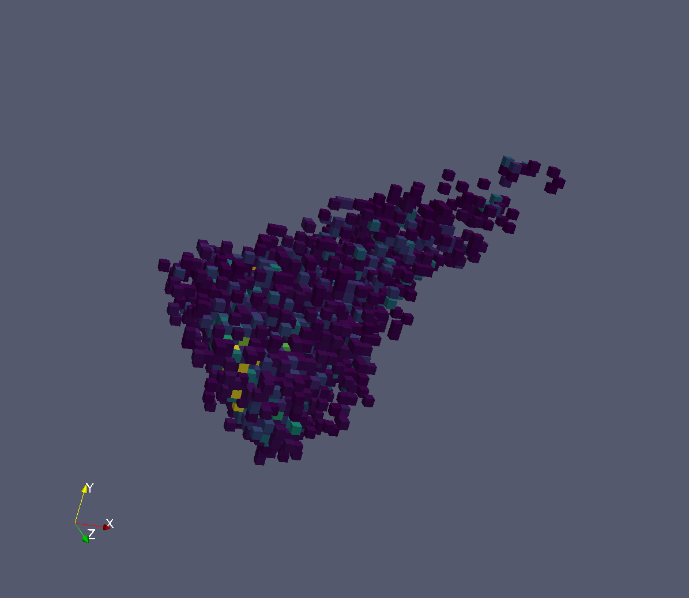

Diffraction Changes#
Crystal Improvements#
Single Crystal Diffraction#
HFIR HB3A’s data reduction interface application (MantidPlot/Interfaces/Diffraction/HFIR 4Circle Reduction) has been expanded and improved from previous release. It provides an integrated user-friendly interface for instrument scientists and users to access data, calculate and refine UB matrix, merge multiple data sets for slice-view and peak integration.
IntegratePeaksMDHKL has been added to integrate data in HKL space. The main usage will be to normalize the data using MDNormSCD and then integrate the resulting MDHistoWorkspace, but it also integrates MDHistoWorkspaces and MDEventWorkspaces without normalizing. The MD data must be in units of HKL. A 3D box is created for each peak and the background and peak data are separated. The intensity and sigma of the intensity is found from the grid inside the peak and the background is subtracted. The boxes are created and integrated in parallel and less memory is required than binning all HKL space at once. The figure shows the grid points within an HKL box that are in one peak from Si data.
{kind=link}

Some improvements were done for creating peaks from python. CreatePeaksWorkspace copies the goniometer from the input MatrixWorkspace to PeaksWorkspace. createPeak for PeaksWorkspace copies goniometer from PeaksWorkspace to peak. setGoniometer for a peak can be done from python and setQLabFrame and setQSampleFrame work correctly now with one argument.
SCDCalibratePanels has been rewritten to calibrate the position and rotations of each panel independently in parallel. There are options to calibrate the panel size and the L1 for all the panels. Only the U of the UB matrix is refined. There is a script, scripts/SCD_Reduction/SCDCalibratePanelsResults.py, that takes the output of this algorithm and plots the theoretical vs calculated position of each peak for each panel. The RMSD in mm is calculated and printed in a log file and on the plots.
Given a PeaksWorkspace or MatrixWorkspace with an instrument, SetDetScale will set or change the detector bank scales that are used in SaveHKL and AnvredCorrection. The input format is the same as used in anvred3.py, so DetScaleList input can be pasted from the definition of detScale there. The default values can be set in the instrument parameter file. Default values are in the parameter file for the TOPAZ instrument.
SaveLauenorm was modified to have an option to use the detector bank scales from the instrument parameters. The values can be set to have defaults in the instrument parameter file or by SetDetScale.
Engineering Diffraction#
EnggFocus: bins are now masked at the beginning of the workflow (when using the option MaskBinsXMins)
SaveDiffFittingAscii an algorithm which saves a TableWorkspace containing diffraction fitting results as an ASCII file
New Fit All button on the Fitting Tab will enable user to batch-process all the runs and banks when a range of run number is given. During the Fit process, SaveDiffFittingAscii algorithm will be utilised to save engggui_fitting_fitpeaks_param TableWorkspace as a csv file.
New Load button on the Fitting Tab, will enable user to load the focused file to the canvas, so that the user can select the peaks manually beforehand
New tool-tip How to use quickly tells users how to use the peak picker tool by simply hovering their cursor over it.
Powder Diffraction#
SNSPowderReduction has changed parameters.
Instrument,RunNumber, andExtensionhave been replaced with a singleFilenameparameter. This has been paired with changes to the Powder Diffraction interface as well. There were also a variety of bugfixes related to the output workspaces. While it did not affect the saved data files, the output workspaces were not always correctly normalized or in the requested units. There is also an additionalGroupingFileparameter which allows overriding the grouping that is specified in theCalibrationFile. The documentation for this algorithm has been greatly expanded as well.PDFFourierTransform has been modified to look at the signal as well when looking at the
Q-range to use for the transform.- Crystallography Powder Diffraction Script: S-Empty option has been enabled for
the Crystallography Powder Diffraction Script. In order to use the S-Empty option, simply provide the S-Empty run number within the
.preffile.
CorelliCrossCorrelate: The weights applied to events have changed by a factor of the duty cycle (\(c\approx0.498\)) as requested by the instrument scientists.
Pearl Powder Diffraction Script: A workflow diagram for
pearl_run_focusfunction has been created.CalibrateRectangularDetectors has been modified to output
.h5formatted calibration files as well as the other versions it already supported.New algorithm PDCalibration for pixel-by-pixel calibration in time-of-flight space.
Imaging#
An updated version of the IMAT instrument definition now includes prototype diffraction detector banks.
Tomographic reconstruction graphical user interface#
Fixed the submission of custom commands.
Full list of diffraction and imaging changes on GitHub.